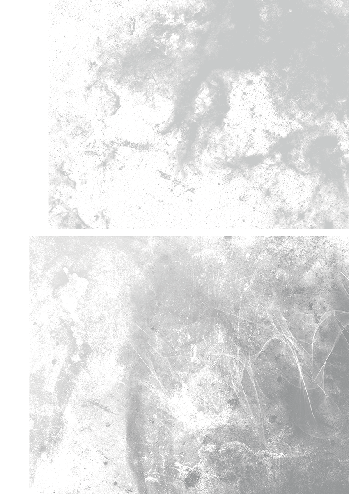
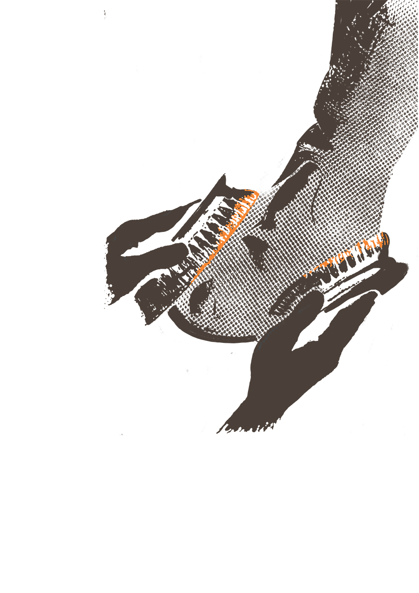
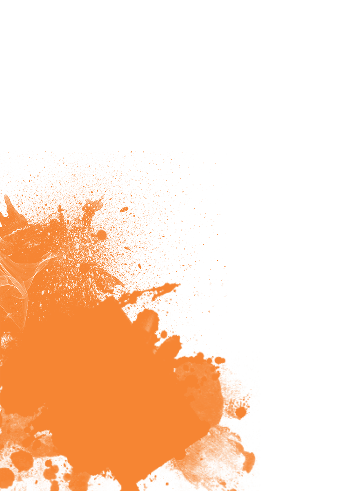
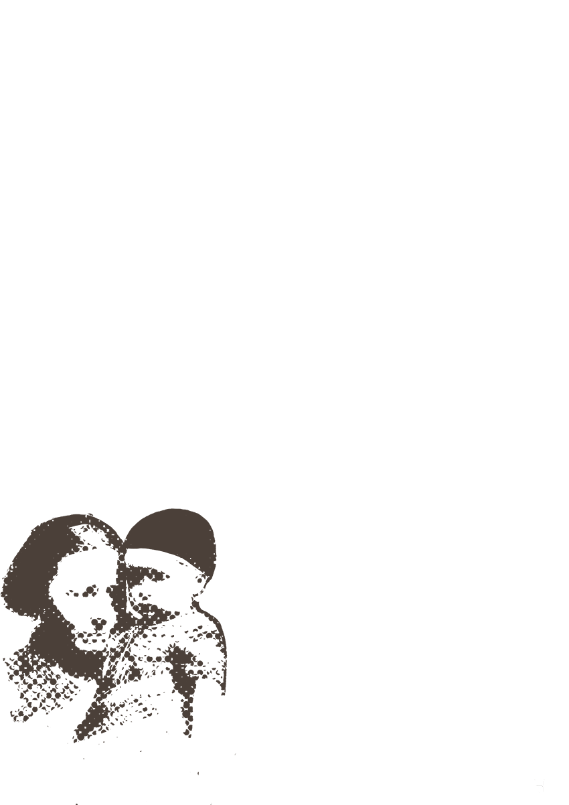
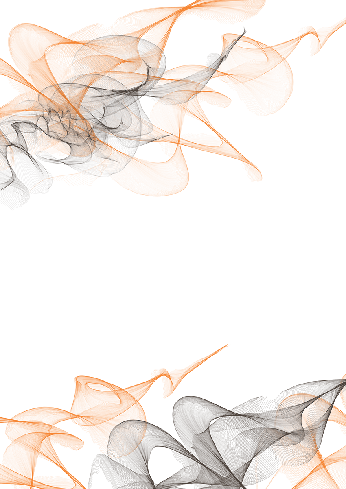

Олександр Андрійович Кузьменко народився у м. Глухів, Сумської області 1 травня 1931 року в родині
осілих ромів. Батько, Андрій Іванович, очолював один з колгоспів на Харківщині, там же працювала й мати
- Поліна Іванівна. Незадовго до початку війни родина переїхала до Києва, де їм довелося пережити
окупацію в той час, коли батько перебував на фронті.
Аудіо текст
Олександр Кузьменко
Значит, когда немцы заняли Киев, нужны были средства существования. Я не мог дома сидеть, потому
шо кушать все равно не было чего, иначе б мы с голоду умерли. Мама ждала ребенка... Да. А брат
мой он был типичный еврей. Был настоко похож на еврея, шо ему нельзя было выйти с квартиры на
улицу. А я немножко меньше был похож. Я больше был похож на ассирийца, будучи пацаном. И у нас
рядом, недалеко жила семья ассирийцев большая. Их было восемь человек детей. Они были такого
возраста, как я.
Так вот мы друг на друга были похожи. В этой толпе меня отличить нельзя было. И я с ними вместе
для того, шобы можно было хоть какой кусок хлеба заработать, я чистил сапоги немцам, итальянцам,
мадьярам...
Это было… Вот, где сейчас... На площади Толстого, где щас бывший ресторан «Спорт». Вот в этом,
около этого ресторана, а тогда он был ресторан только для немцев, и вот мы немцам чистили
сапоги. Нас сидело человек десять-пятнадцать, вот так вот. Все черненькие и все одинаковые. Вот
с такими сундучками, две щетки и все чистили сапоги. Я сам ходить никак не мог по улице, потому
шо меня сразу же бы арестовали, потому шо я был похож на еврея, как две капли воды. А вот в
массе вот этих ассирийцев я как-то скрадывался и меня было не заметно.
И я мог заработать хоть на кусок хлеба. Я мог заработать для того, чтобы... Сестре молока нельзя
было купить, а ей нужно было молоко, потому шо она токо, токо родилась. А мать больная, у нее
пропало молоко, паралич правой стороны. И вот на меня в каких-то десять-одинадцатый год ложилась
такая вот задача.





Кантемирова (Шекерова) Олена Павлівна
Однією із доволі поширених стратегій виживання було приховування своєї етнічної належності. Ця тема вже
дістала відображення в працях проф. В. Віппермана. Він дійшов висновку, що СС та айнзацгрупи часто
стикалися з труднощами у виявленні серед місцевого населення ромів, оскільки ті досить вдало приховували
власну ідентичність [6]. Про мімікрію як одну зі стратегій виживання говорить також Н. Бессонов: «Як
тільки з’ясувалося, що страти здійснюються за національною ознакою, цигани стали активно видавати себе
за слов’ян, молдаван, татар і т. д. Відомі випадки, коли це допомагало навіть на краю розстрільної ями»
[7].
Це явище дуже добре ілюструє розповідь Олександра Кузьменка, який у віці 11 років проживав в окупованому
Києві. Йому допомогло врятуватись сусідство із представниками іншої етнічної меншини:
Значит, когда немцы заняли Киев, нужны были средства существования. Я не мог дома сидеть, потому шо
кушать все равно не было чего, иначе б мы с голоду умерли. Мама ждала ребенка... Да. А брат мой он
был типичный еврей. Был настоко похож на еврея, шо ему нельзя было выйти с квартиры на улицу. А я
немножко меньше был похож. Я больше был похож на ассирийца, будучи пацаном. И у нас рядом, недалеко
жила семья ассирийцев большая. Их было восемь человек детей. Они были такого возраста, как я.
Так вот мы друг на друга были похожи. В этой толпе меня отличить нельзя было. И я с ними вместе для
того, шобы можно было хоть какой кусок хлеба заработать, я чистил сапоги немцам, итальянцам,
мадьярам...
Это было… Вот, где сейчас... На площади Толстого, где щас бывший ресторан «Спорт». Вот в этом, около
этого ресторана, а тогда он был ресторан только для немцев, и вот мы немцам чистили сапоги. Нас
сидело человек десять-пятнадцать, вот так вот. Все черненькие и все одинаковые. Вот с такими
сундучками, две щетки и все чистили сапоги. Я сам ходить никак не мог по улице, потому шо меня сразу
же бы арестовали, потому шо я был похож на еврея, как две капли воды. А вот в массе вот этих
ассирийцев я как-то скрадывался и меня было не заметно.
И я мог заработать хоть на кусок хлеба. Я мог заработать для того, чтобы... Сестре молока нельзя
было купить, а ей нужно было молоко, потому шо она токо, токо родилась. А мать больная, у нее
пропало молоко, паралич правой стороны. И вот на меня в каких-то десять-одинадцатый год ложилась
такая вот задача [1].
Як бачимо щоб мати змогу хоч якось прогодуватися, доводилось комунікувати із зовнішнім світом. Щастило
тим родинам, де хоч хтось був «біленьким», «світленьким», тобто не мав зовнішності, що сприймалась як
«типово» ромська. Більш смагляві члени родини становили небезпеку, адже в будь-який момент в них могли
впізнати ромів, а це загрожувало неминучою смертю всій родині. Тому їм доводилось ретельно
переховуватись. Така ситуація склалася в родині ще одного рома, який пережив роки війни: «Слава Богу,
мати наша трошки біленька, не похожа, шо вона могла ходить, доставала шось нам, шоб не померли з голоду,
піддержувала нас понємножку […] Ну, не могли сказать, шо вона циганка. Бачили, но я за нею не ходив.
Вона мене й не брала. «Ти чорненький, ти сиди вдома і на вулицю не виходь». То я вже ніде й не ходив.
[…] В мене сестричка була біленька така, то вона ходила з матір’ю, а братік тоже не ходив» [2].
Окупантам подекуди важко було ідентифікувати ромів, тому для цього заручалися підтримкою поплічників з
місцевого населення. Але цей принцип діяв і в зворотньому напрямку, про що дуже часто знаходимо
відомості в текстах спогадів. Аби врятуватися, іноді навіть на краю розстрільної ями, могло вистачити
заступництва когось із місцевого не ромського населення, хто б підтвердив, що підозрюваний не є ані
ромом, ані євреєм. Саме таку ситуацію описує одна з інформанток: «Проєзжали і підводили їх коні, і
мотоцикли були в їх, а тоді вже вони попали мене та й кажуть: «Ти циганка чи ти юда?» А я кажу: «Ні, я
не юда». А ті плєнні, спасіба, вже й кажуть: «Пан, не беріть цю дєвочку! Вона тут недалеко. Вона
руськая. Вона не юда і не циганка». Шо ж ви думаєте, другий нємєц послухав його, і каже по-своєму:
«Пусти її!». […] Нє плєнні, то я вже б пропала. А плєнні мене спасли» [3].
Такий досвід виживання в умовах окупації неоднозначно вплинув на подальшу самоідентифікацію та
саморепрезентацію ромів. Навіть через кілька десятиліть після завершення війни вцілілі по-різному
оцінювали вимушену мімікрію. Пережитий досвід лишився для багатьох пересторогою на майбутнє і вилився у
бажання обов’язково стати власниками «хороших документів», де була б вказана «нейтральна» національність
(українець, росіянин, молдаванин тощо). Лишаючись в реальному житті ромами, на папері ними бути не
хотіли: «У Колі – українець. І в мене – укра… […] А ми сами не схотіли. […]. Потому шо, так знаєте, так
по вуличному, так ми прозиваємось цигани. Оце й тут ми – цигани. А по документах – українці» [4].
Але так вважали не всі. Цікаво також поглянути на зворотню реакцію, що була абсолютно відмінною. Тепер,
коли не було прямої загрози життю, частина інформанів були більш схильні називати себе ромами (в текстах
спогадів «циганами» – Авт.), ніж кимось іншим: «А іноді кажуть: «Ви не ображаєтесь, шо ми говорим –
“цигани”?». А я кажу: «А єслі ви скажете на мене “єврей”? Як я циган і є, оце правильно, оце. Ви
справєдліво сказали». А шо ж я буду обіжаться, як я циган і є» [5].